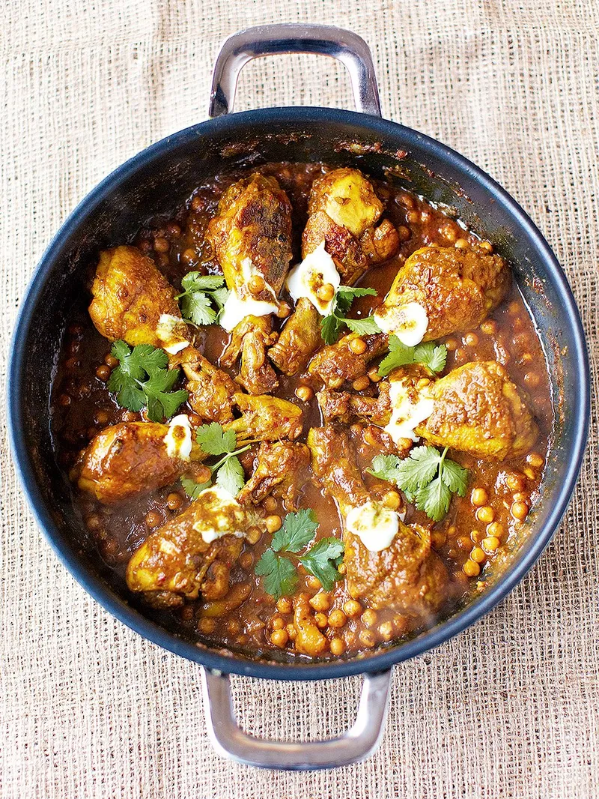

Original Leo Yellow Pukka

Description
I will share my recipe for the world's best Yellow Pukka Chicken!
Please give a review of your impressions!
Ingredients
Basics
- Olive Oil
- Salt & Pepper & Paprika Polver
- Balsamico or Vinegar
Sauce
- 1 yellow Paprika
- 1-2 Onios
- 4-5 Cloves Garlic
- Bunch of Coriander
- 1 teaspoon runny honey
- 1teaspoon of Curry,Coriander in Polver etc
- Chest and juice of 1 lemon
- one tablespoon of tomatoe mark
Meat
vegetables
- 1 Paprika
- 1 big or 2 small Onions
- Can of chickpeas
Steps
Sauce
- Put all ingriedients into a blazer and mix it up
- blaze it until its like a puree
Chicken
- Add a tablespoon of olive oil in a hot frying pan
- Once hot put the chicken into the pan a let it fry for 2-3 min until its golden
- Add paprika polver, salt and black pepper
- Take out the chicken and add the onions and paprika and let it cook for 5 min
- Put the sauce into the pan and mix it up
- add the chickpeas and 400ml of hot boiling water
- Add the chicken tights and let it cook on medium heat for at least one hour or until its done
- Serve with rice